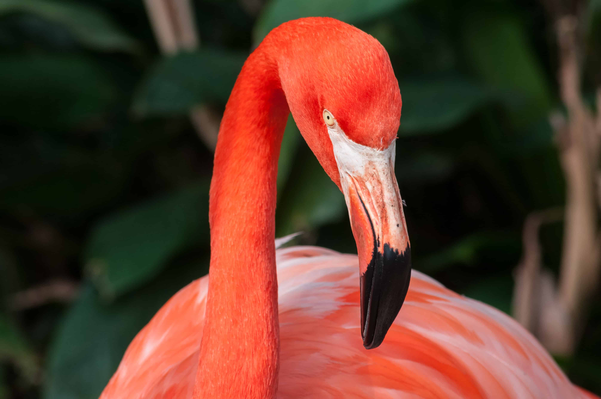
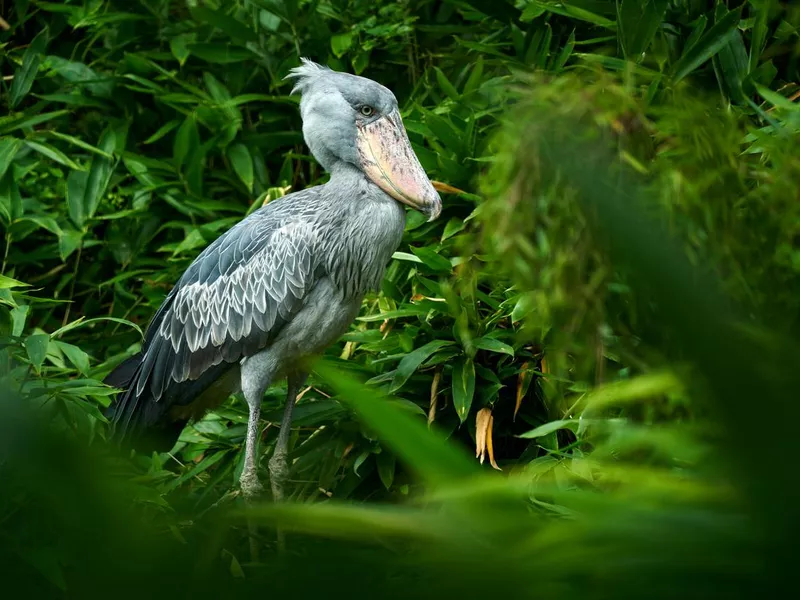

Swans are birds of the family Anatidae within the genus Cygnus.
Shoebills use their powerful beaks to grasp and strangle just about anything they encounter, but don’t worry — they don’t prey on humans.Had powerful role-based dashboard for insights and actionable tasks.
Lyrebird could easily win a talent show for their ability to mimic sounds in their environment.

